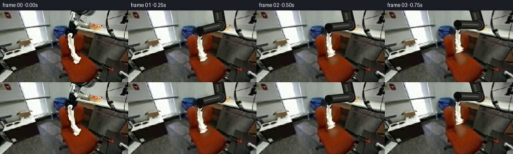
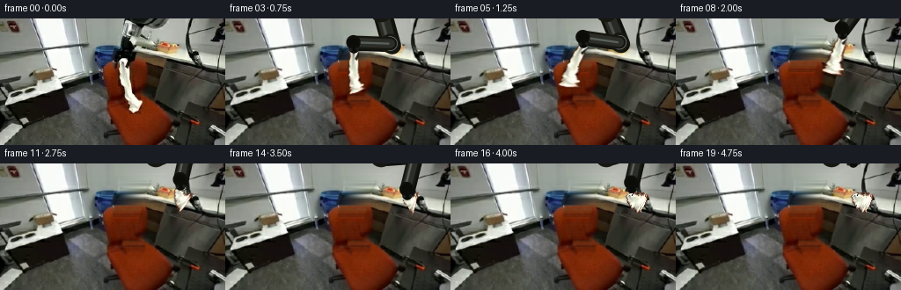
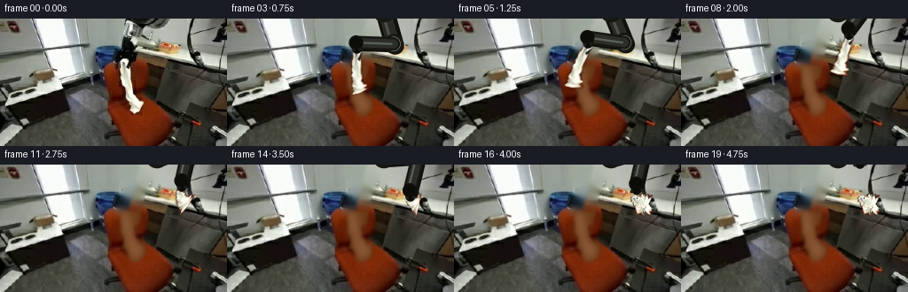
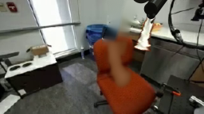
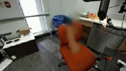
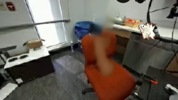
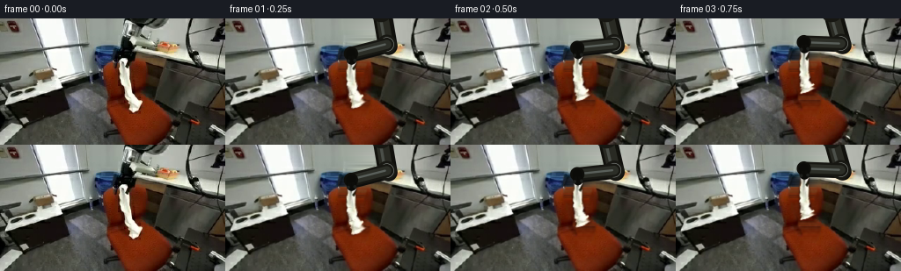

CODING AGENTS AS PIXEL WORLD MODELS
traex/GPT-5.6-Sol · common50_0011
点击播放 · 原生 RGB 像素
逐轮保存的候选
回放视频、检查图与代码变化。
每份候选均可单独播放。实际图片检查记录在下方工具轨迹中。
候选 01播放与检查图
点击播放 · 原生 RGB 像素


展开代码变化
--- 上一保存版本
+++ 本次保存版本
@@ -0,0 +1,210 @@
+from pathlib import Path
+import math
+import numpy as np
+import cv2
+from PIL import Image
+from artifact_io import save
+
+CASE_DIR = Path(__file__).resolve().parent
+W,H = 256,144
+src_rgb = np.asarray(Image.open(CASE_DIR/'first_frame.png').convert('RGB'))
+src = cv2.cvtColor(src_rgb, cv2.COLOR_RGB2BGR)
+
+# Isolate the original cloth, using its bright neutral pixels in a tightly limited ROI.
+hsv = cv2.cvtColor(src, cv2.COLOR_BGR2HSV)
+cloth_mask = np.zeros((H,W), np.uint8)
+roi = ((hsv[:,:,1] < 92) & (hsv[:,:,2] > 118)).astype(np.uint8)*255
+limit = np.zeros_like(cloth_mask)
+cloth_poly = np.array([(137,45),(151,44),(153,57),(153,66),(158,77),(157,86),
+ (164,91),(159,107),(149,110),(140,100),(143,91),(138,82),
+ (137,70),(134,58)], np.int32)
+cv2.fillPoly(limit,[cloth_poly],255)
+cloth_mask = cv2.bitwise_and(roi, limit)
+# Preserve shadowed cloth pixels by closing and filling its silhouette.
+cloth_mask = cv2.morphologyEx(cloth_mask, cv2.MORPH_CLOSE, np.ones((5,5),np.uint8), iterations=2)
+num, lab, stats, _ = cv2.connectedComponentsWithStats((cloth_mask>0).astype(np.uint8),8)
+if num>1:
+ k=1+np.argmax(stats[1:,cv2.CC_STAT_AREA]); cloth_mask=(lab==k).astype(np.uint8)*255
+cloth_mask = cv2.dilate(cloth_mask,np.ones((3,3),np.uint8),iterations=1)
+cloth_alpha = cv2.GaussianBlur(cloth_mask,(3,3),0).astype(np.float32)/255.0
+
+# Build the fixed workspace plate. Inpaint only the original moving robot and cloth.
+remove = np.zeros((H,W), np.uint8)
+arm_poly = np.array([(136,0),(192,0),(181,10),(167,17),(161,33),(158,50),
+ (153,66),(137,68),(130,58),(134,43),(140,29)],np.int32)
+cv2.fillPoly(remove,[arm_poly],255)
+remove = cv2.max(remove,cloth_mask)
+remove = cv2.dilate(remove,np.ones((5,5),np.uint8),iterations=1)
+plate = cv2.inpaint(src, remove, 5, cv2.INPAINT_TELEA)
+# Reinforce the chair-colored area which was behind the hanging cloth.
+chair_fill = np.zeros((H,W),np.uint8)
+cv2.fillPoly(chair_fill,[np.array([(135,54),(158,51),(164,103),(150,111),(137,96)],np.int32)],255)
+chair_fill = cv2.bitwise_and(chair_fill,remove)
+chair_tex = cv2.GaussianBlur(src,(0,0),5)
+# Warm chair color estimated from surrounding upholstery, with original low-frequency shading.
+col=np.array([35,68,116],np.float32) # BGR
+lum=(chair_tex.astype(np.float32).mean(2)-chair_tex.mean())[:,:,None]*0.22
+fill=np.clip(col+lum,0,255).astype(np.uint8)
+a=cv2.GaussianBlur(chair_fill,(9,9),0).astype(np.float32)[:,:,None]/255
+plate=(plate*(1-a)+fill*a).astype(np.uint8)
+
+# Source mesh for the cloth. Scanline envelope from its actual silhouette.
+ys=np.array([47,54,62,70,79,88,97,106],np.float32)
+source_sections=[]
+for y in ys:
+ yy=int(round(y)); xx=np.flatnonzero(cloth_mask[max(0,yy-1):min(H,yy+2)].max(axis=0)>0)
+ if len(xx): source_sections.append((float(xx.min()),float(y),float(xx.max())))
+ else: source_sections.append((140.,float(y),154.))
+
+def smoothstep(x):
+ x=np.clip(x,0,1); return x*x*(3-2*x)
+
+def bezier(p0,p1,p2,t):
+ return (1-t)**2*np.array(p0)+2*(1-t)*t*np.array(p1)+t*t*np.array(p2)
+
+def path_state(i):
+ # pinching point and action phase
+ if i<=4: # lift cleanly from the seat
+ u=smoothstep(i/4)
+ grip=(143+4*u, 52-19*u)
+ mode='lift'
+ elif i<=10: # carry right in a shallow, controlled arc
+ u=smoothstep((i-4)/6)
+ grip=bezier((147,33),(175,11),(205,25),u)
+ mode='carry'
+ elif i<=14: # lower onto the white countertop
+ u=smoothstep((i-10)/4)
+ grip=(205+2*u,25+13*u)
+ mode='lower'
+ elif i==15:
+ grip=(207,36); mode='release'
+ else: # open gripper retracts without disturbing the placed cloth
+ u=smoothstep((i-15)/4)
+ grip=(207-5*u,36-35*u); mode='retract'
+ return np.array(grip,float), mode
+
+def target_sections(i,grip,mode):
+ # Eight successive cross-sections form a flexible yet inextensible cloth ribbon.
+ t=np.linspace(0,1,len(ys))
+ centers=[]; widths=[]
+ if mode=='lift':
+ u=smoothstep(i/4)
+ # The lower end initially drags on the seat, then clears it.
+ bottom=np.array((153-3*u,103-24*u))
+ control=np.array((138+7*u,76-9*u))
+ for q in t: centers.append(bezier(grip,control,bottom,q))
+ widths=np.interp(t,[0,.35,.7,1],[5,6,7,10])
+ elif mode=='carry':
+ u=smoothstep((i-4)/6)
+ # Inertial backward bow, diminishing near the destination.
+ bottom=grip+np.array((-10-7*(1-u),48-8*u))
+ control=(grip+bottom)/2+np.array((-8*(1-u),2))
+ for q in t: centers.append(bezier(grip,control,bottom,q))
+ widths=np.interp(t,[0,.45,.8,1],[5,6,8,11])
+ elif mode=='lower':
+ u=smoothstep((i-10)/4)
+ # Bottom makes contact with the counter first and folds to the right.
+ floor_y=45
+ bottom=np.array((211+5*u,floor_y))
+ control=np.array((198+8*u,36+7*u))
+ for q in t: centers.append(bezier(grip,control,bottom,q))
+ widths=np.interp(t,[0,.45,.75,1],[5,6,9,13])
+ else:
+ # Settled folded cloth, completely supported by the countertop.
+ curve=[(203,36),(204,39),(207,41),(210,42),(214,42),(218,44),(213,47),(205,46)]
+ centers=[np.array(p,float) for p in curve]
+ widths=np.array([4,5,7,9,10,11,10,8],float)
+ return np.array(centers),np.asarray(widths)
+
+def warp_cloth(base, centers, widths, shadow=True):
+ out=base.copy()
+ h,w=base.shape[:2]
+ # Render support shadow first.
+ if shadow:
+ sh=np.zeros((h,w),np.uint8)
+ pts=[]
+ for c,ww in zip(centers,widths): pts.append((int(c[0]-ww),int(c[1]+2)))
+ for c,ww in zip(centers[::-1],widths[::-1]): pts.append((int(c[0]+ww),int(c[1]+2)))
+ cv2.fillPoly(sh,[np.array(pts,np.int32)],110)
+ sh=cv2.GaussianBlur(sh,(7,7),2).astype(np.float32)[:,:,None]/255
+ out=np.clip(out.astype(np.float32)*(1-.28*sh),0,255).astype(np.uint8)
+ layer=np.zeros_like(base); alpha=np.zeros((h,w),np.float32)
+ # Piecewise-affine warp of real source cloth pixels.
+ for j in range(len(ys)-1):
+ sx0,sy0,sx1=source_sections[j]; tx0,ty0,tx1=source_sections[j+1]
+ c0,c1=centers[j],centers[j+1]; w0,w1=widths[j],widths[j+1]
+ # normals follow local centerline
+ d=c1-c0; n=np.array([-d[1],d[0]],float); n/=max(np.linalg.norm(n),1e-6)
+ # orient normals consistently left-to-right
+ if n[0]<0: n=-n
+ dstL0=c0-n*w0; dstR0=c0+n*w0; dstL1=c1-n*w1; dstR1=c1+n*w1
+ tris=[(np.float32([[sx0,sy0],[sx1,sy0],[tx0,ty0]]),np.float32([dstL0,dstR0,dstL1])),
+ (np.float32([[sx1,sy0],[tx1,ty0],[tx0,ty0]]),np.float32([dstR0,dstR1,dstL1]))]
+ for st,dt in tris:
+ M=cv2.getAffineTransform(st,dt)
+ warped=cv2.warpAffine(src,M,(w,h),flags=cv2.INTER_LINEAR,borderMode=cv2.BORDER_CONSTANT)
+ wa=cv2.warpAffine(cloth_alpha,M,(w,h),flags=cv2.INTER_LINEAR,borderMode=cv2.BORDER_CONSTANT)
+ tri=np.zeros((h,w),np.uint8); cv2.fillConvexPoly(tri,np.round(dt).astype(np.int32),255,lineType=cv2.LINE_AA)
+ aa=wa*(tri.astype(np.float32)/255)
+ take=aa>alpha
+ layer[take]=warped[take]; alpha=np.maximum(alpha,aa)
+ # Add subtle fold highlights and seams tied to the moving mesh.
+ ov=layer.copy()
+ for k in (2,4,6):
+ c=tuple(np.round(centers[k]).astype(int)); cv2.circle(ov,c,max(1,int(widths[k]*.22)),(244,244,237),-1,cv2.LINE_AA)
+ layer=cv2.addWeighted(layer,.88,ov,.12,0)
+ al=np.clip(alpha[:,:,None],0,1)
+ return np.clip(out*(1-al)+layer*al,0,255).astype(np.uint8)
+
+def draw_arm(img, grip, released=False):
+ # Anti-aliased rigid two-link manipulator, inverse-kinematically tied to the gripper.
+ S=4; canvas=cv2.resize(img,(W*S,H*S),interpolation=cv2.INTER_CUBIC)
+ A=np.array((177.,-9.)); G=np.array(grip,float)
+ # wrist sits just above the pinch point
+ vec=np.array((-.10,-1.0)); wrist=G+vec*9
+ L1,L2=39.,42.
+ v=wrist-A; d=float(np.linalg.norm(v)); d=max(1,min(d,L1+L2-1))
+ ex=v/max(np.linalg.norm(v),1e-5); ey=np.array((-ex[1],ex[0]))
+ x=(L1*L1-L2*L2+d*d)/(2*d); hh=math.sqrt(max(L1*L1-x*x,0))
+ # left/down elbow solution creates natural overhead posture.
+ E=A+ex*x-ey*hh
+ def P(p): return tuple(np.round(np.asarray(p)*S).astype(int))
+ def line(a,b,color,width): cv2.line(canvas,P(a),P(b),color,int(width*S),cv2.LINE_AA)
+ def circ(a,r,color): cv2.circle(canvas,P(a),int(r*S),color,-1,cv2.LINE_AA)
+ # cast shadow
+ line(A+np.array((2,2)),E+np.array((2,2)),(12,14,14),20)
+ line(E+np.array((2,2)),wrist+np.array((2,2)),(12,14,14),15)
+ # first black composite link
+ line(A,E,(12,17,17),20); line(A,E,(35,42,41),14); line(A+np.array((-2,0)),E+np.array((-2,0)),(73,79,75),3)
+ circ(A,13,(18,23,23)); circ(A,8,(54,60,58))
+ # silver collar at elbow, then dark distal link
+ circ(E,11,(19,24,24)); circ(E,8,(165,169,163)); circ(E,5,(207,209,200))
+ line(E,wrist,(18,23,23),15); line(E,wrist,(39,46,44),10); line(E+np.array((-2,0)),wrist+np.array((-2,0)),(91,96,90),2)
+ circ(wrist,8,(10,14,14)); circ(wrist,5,(45,50,47))
+ # gripper palm and paired fingers, opened after release.
+ dv=G-wrist; dv/=max(np.linalg.norm(dv),1e-5); side=np.array((-dv[1],dv[0]))
+ palm=wrist+dv*4
+ line(wrist,palm+dv*3,(8,11,11),11)
+ gap=6 if released else 3.8
+ for sg in (-1,1):
+ q0=palm+side*sg*gap/2; q1=G-dv*1+side*sg*gap
+ line(q0,q1,(10,13,13),3.2)
+ circ(q1,1.8,(28,31,29))
+ return cv2.resize(canvas,(W,H),interpolation=cv2.INTER_AREA)
+
+frames=[]
+for i in range(20):
+ if i==0:
+ frames.append(src_rgb.copy()); continue
+ grip,mode=path_state(i)
+ centers,widths=target_sections(i,grip,mode)
+ # Cloth is behind the arm but in front of workspace.
+ frame=warp_cloth(plate,centers,widths,shadow=True)
+ frame=draw_arm(frame,grip,released=(mode in ('release','retract')))
+ # Restore settled cloth in front of the open fingers after release.
+ if mode in ('release','retract'):
+ frame=warp_cloth(frame,centers,widths,shadow=False)
+ frames.append(cv2.cvtColor(frame,cv2.COLOR_BGR2RGB))
+frames=np.stack(frames).astype(np.uint8)
+assert frames.shape==(20,144,256,3) and np.array_equal(frames[0],src_rgb)
+save(frames,CASE_DIR)
候选 02播放与检查图
点击播放 · 原生 RGB 像素

展开代码变化
--- 上一保存版本
+++ 本次保存版本
@@ -35,18 +35,43 @@
cv2.fillPoly(remove,[arm_poly],255)
remove = cv2.max(remove,cloth_mask)
remove = cv2.dilate(remove,np.ones((5,5),np.uint8),iterations=1)
-plate = cv2.inpaint(src, remove, 5, cv2.INPAINT_TELEA)
-# Reinforce the chair-colored area which was behind the hanging cloth.
-chair_fill = np.zeros((H,W),np.uint8)
-cv2.fillPoly(chair_fill,[np.array([(135,54),(158,51),(164,103),(150,111),(137,96)],np.int32)],255)
-chair_fill = cv2.bitwise_and(chair_fill,remove)
-chair_tex = cv2.GaussianBlur(src,(0,0),5)
-# Warm chair color estimated from surrounding upholstery, with original low-frequency shading.
-col=np.array([35,68,116],np.float32) # BGR
-lum=(chair_tex.astype(np.float32).mean(2)-chair_tex.mean())[:,:,None]*0.22
-fill=np.clip(col+lum,0,255).astype(np.uint8)
-a=cv2.GaussianBlur(chair_fill,(9,9),0).astype(np.float32)[:,:,None]/255
-plate=(plate*(1-a)+fill*a).astype(np.uint8)
+# Reconstruct the narrow vacated strip rather than asking an in-painter to blur a
+# large unknown region. Above the chair, each scanline is a smooth wall/counter
+# interpolation. On the chair, use the median of the visible fabric on that row
+# and retain a small, deterministic woven luminance variation.
+plate=src.copy()
+for y in range(H):
+ runs=np.flatnonzero(remove[y]>0)
+ if not len(runs): continue
+ lo,hi=int(runs.min()),int(runs.max())
+ left=src[y,max(0,lo-4):max(1,lo)].astype(np.float32).mean(axis=0)
+ right=src[y,min(W,hi+1):min(W,hi+5)].astype(np.float32).mean(axis=0)
+ for x in runs:
+ q=(x-lo)/max(1,hi-lo)
+ plate[y,x]=np.clip(left*(1-q)+right*q,0,255)
+
+# Chair silhouette behind the original wrist and cloth.
+chair_region=np.zeros((H,W),np.uint8)
+cv2.fillPoly(chair_region,[np.array([(122,48),(166,48),(171,93),(181,111),
+ (155,116),(128,101),(119,70)],np.int32)],255)
+chair_hole=cv2.bitwise_and(remove,chair_region)
+rng=np.random.default_rng(17)
+noise=cv2.GaussianBlur(rng.normal(0,1,(H,W)).astype(np.float32),(0,0),1.2)
+for y in range(45,118):
+ known=(chair_region[y]>0)&(remove[y]==0)
+ pix=src[y,known]
+ # Select unmistakably orange upholstery, rejecting cabinet and wall pixels.
+ if len(pix):
+ good=pix[(pix[:,2]>70)&(pix[:,2]>pix[:,1]*1.25)&(pix[:,1]>pix[:,0]*1.15)]
+ else: good=[]
+ col=np.median(good,axis=0) if len(good) else np.array([35,66,112])
+ for x in np.flatnonzero(chair_hole[y]>0):
+ plate[y,x]=np.clip(col+noise[y,x]*7,0,255)
+
+# Only soften the repair seam, not the interior texture.
+edge=cv2.morphologyEx(remove,cv2.MORPH_GRADIENT,np.ones((3,3),np.uint8))
+soft=cv2.GaussianBlur(plate,(3,3),0)
+plate[edge>0]=soft[edge>0]
# Source mesh for the cloth. Scanline envelope from its actual silhouette.
ys=np.array([47,54,62,70,79,88,97,106],np.float32)
@@ -100,7 +125,7 @@
bottom=grip+np.array((-10-7*(1-u),48-8*u))
control=(grip+bottom)/2+np.array((-8*(1-u),2))
for q in t: centers.append(bezier(grip,control,bottom,q))
- widths=np.interp(t,[0,.45,.8,1],[5,6,8,11])
+ widths=np.interp(t,[0,.45,.8,1],[5,7,10,13])
elif mode=='lower':
u=smoothstep((i-10)/4)
# Bottom makes contact with the counter first and folds to the right.
@@ -111,9 +136,9 @@
widths=np.interp(t,[0,.45,.75,1],[5,6,9,13])
else:
# Settled folded cloth, completely supported by the countertop.
- curve=[(203,36),(204,39),(207,41),(210,42),(214,42),(218,44),(213,47),(205,46)]
+ curve=[(203,35),(204,37),(206,39),(209,41),(212,43),(215,44),(218,45),(220,46)]
centers=[np.array(p,float) for p in curve]
- widths=np.array([4,5,7,9,10,11,10,8],float)
+ widths=np.array([4,5,7,9,11,12,11,9],float)
return np.array(centers),np.asarray(widths)
def warp_cloth(base, centers, widths, shadow=True):
可观测工具轨迹
实际执行的命令与返回图片。
命令 1exit 0
/bin/bash -lc "cat prompt.txt && printf '\\n--- GENERATION RULES ---\\n' && cat GENERATION_RULES.md"
命令 2exit 1
/bin/bash -lc "find . -maxdepth 2 -type f -printf '%p %s bytes\\n' | sort && printf '\\n--- tool availability ---\\n' && command -v ffmpeg && command -v python3"
命令 3exit 0
/bin/bash -lc "cat task_spec.json; sed -n '1,260p' artifact_io.py"
命令 4exit 0
/bin/bash -lc "for x in python python3 ffmpeg convert magick; do printf '%s: ' \""'$x"; command -v "$x" || true; done; python3 - <<'"'PY'
from PIL import Image
import numpy as np
im=Image.open('first_frame.png')
print(im.mode,im.size,np.array(im).shape)
PY"命令 5exit 0
/bin/bash -lc "python3 - <<'PY'
try:
import cv2; print('cv2',cv2.__version__)
except Exception as e: print('no cv2',e)
try:
import scipy; print('scipy',scipy.__version__)
except Exception as e: print('no scipy',e)
PY"命令 6exit 0
/bin/bash -lc "python3 - <<'PY'
from PIL import Image
Image.open('first_frame.png').resize((1024,576)).save('.tmp/enlarged.png')
PY"命令 7exit 0
/bin/bash -lc "cat > generate.py <<'PY'
from pathlib import Path
import math
import numpy as np
import cv2
from PIL import Image
from artifact_io import save
CASE_DIR = Path(__file__).resolve().parent
W,H = 256,144
src_rgb = np.asarray(Image.open(CASE_DIR/'first_frame.png').convert('RGB'))
src = cv2.cvtColor(src_rgb, cv2.COLOR_RGB2BGR)
# Isolate the original cloth, using its bright neutral pixels in a tightly limited ROI.
hsv = cv2.cvtColor(src, cv2.COLOR_BGR2HSV)
cloth_mask = np.zeros((H,W), np.uint8)
roi = ((hsv[:,:,1] < 92) & (hsv[:,:,2] > 118)).astype(np.uint8)*255
limit = np.zeros_like(cloth_mask)
cloth_poly = np.array([(137,45),(151,44),(153,57),(153,66),(158,77),(157,86),
(164,91),(159,107),(149,110),(140,100),(143,91),(138,82),
(137,70),(134,58)], np.int32)
cv2.fillPoly(limit,[cloth_poly],255)
cloth_mask = cv2.bitwise_and(roi, limit)
# Preserve shadowed cloth pixels by closing and filling its silhouette.
cloth_mask = cv2.morphologyEx(cloth_mask, cv2.MORPH_CLOSE, np.ones((5,5),np.uint8), iterations=2)
num, lab, stats, _ = cv2.connectedComponentsWithStats((cloth_mask>0).astype(np.uint8),8)
if num>1:
k=1+np.argmax(stats[1:,cv2.CC_STAT_AREA]); cloth_mask=(lab==k).astype(np.uint8)*255
cloth_mask = cv2.dilate(cloth_mask,np.ones((3,3),np.uint8),iterations=1)
cloth_alpha = cv2.GaussianBlur(cloth_mask,(3,3),0).astype(np.float32)/255.0
# Build the fixed workspace plate. Inpaint only the original moving robot and cloth.
remove = np.zeros((H,W), np.uint8)
arm_poly = np.array([(136,0),(192,0),(181,10),(167,17),(161,33),(158,50),
(153,66),(137,68),(130,58),(134,43),(140,29)],np.int32)
cv2.fillPoly(remove,[arm_poly],255)
remove = cv2.max(remove,cloth_mask)
remove = cv2.dilate(remove,np.ones((5,5),np.uint8),iterations=1)
plate = cv2.inpaint(src, remove, 5, cv2.INPAINT_TELEA)
# Reinforce the chair-colored area which was behind the hanging cloth.
chair_fill = np.zeros((H,W),np.uint8)
cv2.fillPoly(chair_fill,[np.array([(135,54),(158,51),(164,103),(150,111),(137,96)],np.int32)],255)
chair_fill = cv2.bitwise_and(chair_fill,remove)
chair_tex = cv2.GaussianBlur(src,(0,0),5)
# Warm chair color estimated from surrounding upholstery, with original low-frequency shading.
col=np.array([35,68,116],np.float32) # BGR
lum=(chair_tex.astype(np.float32).mean(2)-chair_tex.mean())[:,:,None]*0.22
fill=np.clip(col+lum,0,255).astype(np.uint8)
a=cv2.GaussianBlur(chair_fill,(9,9),0).astype(np.float32)[:,:,None]/255
plate=(plate*(1-a)+fill*a).astype(np.uint8)
# Source mesh for the cloth. Scanline envelope from its actual silhouette.
ys=np.array([47,54,62,70,79,88,97,106],np.float32)
source_sections=[]
for y in ys:
yy=int(round(y)); xx=np.flatnonzero(cloth_mask[max(0,yy-1):min(H,yy+2)].max(axis=0)>0)
if len(xx): source_sections.append((float(xx.min()),float(y),float(xx.max())))
else: source_sections.append((140.,float(y),154.))
def smoothstep(x):
x=np.clip(x,0,1); return x*x*(3-2*x)
def bezier(p0,p1,p2,t):
return (1-t)**2*np.array(p0)+2*(1-t)*t*np.array(p1)+t*t*np.array(p2)
def path_state(i):
# pinching point and action phase
if i<=4: # lift cleanly from the seat
u=smoothstep(i/4)
grip=(143+4*u, 52-19*u)
mode='lift'
elif i<=10: # carry right in a shallow, controlled arc
u=smoothstep((i-4)/6)
grip=bezier((147,33),(175,11),(205,25),u)
mode='carry'
elif i<=14: # lower onto the white countertop
u=smoothstep((i-10)/4)
grip=(205+2*u,25+13*u)
mode='lower'
elif i==15:
grip=(207,36); mode='release'
else: # open gripper retracts without disturbing the placed cloth
u=smoothstep((i-15)/4)
grip=(207-5*u,36-35*u); mode='retract'
return np.array(grip,float), mode
def target_sections(i,grip,mode):
# Eight successive cross-sections form a flexible yet inextensible cloth ribbon.
t=np.linspace(0,1,len(ys))
centers=[]; widths=[]
if mode=='lift':
u=smoothstep(i/4)
# The lower end initially drags on the seat, then clears it.
bottom=np.array((153-3*u,103-24*u))
control=np.array((138+7*u,76-9*u))
for q in t: centers.append(bezier(grip,control,bottom,q))
widths=np.interp(t,[0,.35,.7,1],[5,6,7,10])
elif mode=='carry':
u=smoothstep((i-4)/6)
# Inertial backward bow, diminishing near the destination.
bottom=grip+np.array((-10-7*(1-u),48-8*u))
control=(grip+bottom)/2+np.array((-8*(1-u),2))
for q in t: centers.append(bezier(grip,control,bottom,q))
widths=np.interp(t,[0,.45,.8,1],[5,6,8,11])
elif mode=='lower':
u=smoothstep((i-10)/4)
# Bottom makes contact with the counter first and folds to the right.
floor_y=45
bottom=np.array((211+5*u,floor_y))
control=np.array((198+8*u,36+7*u))
for q in t: centers.append(bezier(grip,control,bottom,q))
widths=np.interp(t,[0,.45,.75,1],[5,6,9,13])
else:
# Settled folded cloth, completely supported by the countertop.
curve=[(203,36),(204,39),(207,41),(210,42),(214,42),(218,44),(213,47),(205,46)]
centers=[np.array(p,float) for p in curve]
widths=np.array([4,5,7,9,10,11,10,8],float)
return np.array(centers),np.asarray(widths)
def warp_cloth(base, centers, widths, shadow=True):
out=base.copy()
h,w=base.shape[:2]
# Render support shadow first.
if shadow:
sh=np.zeros((h,w),np.uint8)
pts=[]
for c,ww in zip(centers,widths): pts.append((int(c[0]-ww),int(c[1]+2)))
for c,ww in zip(centers[::-1],widths[::-1]): pts.append((int(c[0]+ww),int(c[1]+2)))
cv2.fillPoly(sh,[np.array(pts,np.int32)],110)
sh=cv2.GaussianBlur(sh,(7,7),2).astype(np.float32)[:,:,None]/255
out=np.clip(out.astype(np.float32)*(1-.28*sh),0,255).astype(np.uint8)
layer=np.zeros_like(base); alpha=np.zeros((h,w),np.float32)
# Piecewise-affine warp of real source cloth pixels.
for j in range(len(ys)-1):
sx0,sy0,sx1=source_sections[j]; tx0,ty0,tx1=source_sections[j+1]
c0,c1=centers[j],centers[j+1]; w0,w1=widths[j],widths[j+1]
# normals follow local centerline
d=c1-c0; n=np.array([-d[1],d[0]],float); n/=max(np.linalg.norm(n),1e-6)
# orient normals consistently left-to-right
if n[0]<0: n=-n
dstL0=c0-n*w0; dstR0=c0+n*w0; dstL1=c1-n*w1; dstR1=c1+n*w1
tris=[(np.float32([[sx0,sy0],[sx1,sy0],[tx0,ty0]]),np.float32([dstL0,dstR0,dstL1])),
(np.float32([[sx1,sy0],[tx1,ty0],[tx0,ty0]]),np.float32([dstR0,dstR1,dstL1]))]
for st,dt in tris:
M=cv2.getAffineTransform(st,dt)
warped=cv2.warpAffine(src,M,(w,h),flags=cv2.INTER_LINEAR,borderMode=cv2.BORDER_CONSTANT)
wa=cv2.warpAffine(cloth_alpha,M,(w,h),flags=cv2.INTER_LINEAR,borderMode=cv2.BORDER_CONSTANT)
tri=np.zeros((h,w),np.uint8); cv2.fillConvexPoly(tri,np.round(dt).astype(np.int32),255,lineType=cv2.LINE_AA)
aa=wa*(tri.astype(np.float32)/255)
take=aa>alpha
layer[take]=warped[take]; alpha=np.maximum(alpha,aa)
# Add subtle fold highlights and seams tied to the moving mesh.
ov=layer.copy()
for k in (2,4,6):
c=tuple(np.round(centers[k]).astype(int)); cv2.circle(ov,c,max(1,int(widths[k]*.22)),(244,244,237),-1,cv2.LINE_AA)
layer=cv2.addWeighted(layer,.88,ov,.12,0)
al=np.clip(alpha[:,:,None],0,1)
return np.clip(out*(1-al)+layer*al,0,255).astype(np.uint8)
def draw_arm(img, grip, released=False):
# Anti-aliased rigid two-link manipulator, inverse-kinematically tied to the gripper.
S=4; canvas=cv2.resize(img,(W*S,H*S),interpolation=cv2.INTER_CUBIC)
A=np.array((177.,-9.)); G=np.array(grip,float)
# wrist sits just above the pinch point
vec=np.array((-.10,-1.0)); wrist=G+vec*9
L1,L2=39.,42.
v=wrist-A; d=float(np.linalg.norm(v)); d=max(1,min(d,L1+L2-1))
ex=v/max(np.linalg.norm(v),1e-5); ey=np.array((-ex[1],ex[0]))
x=(L1*L1-L2*L2+d*d)/(2*d); hh=math.sqrt(max(L1*L1-x*x,0))
# left/down elbow solution creates natural overhead posture.
E=A+ex*x-ey*hh
def P(p): return tuple(np.round(np.asarray(p)*S).astype(int))
def line(a,b,color,width): cv2.line(canvas,P(a),P(b),color,int(width*S),cv2.LINE_AA)
def circ(a,r,color): cv2.circle(canvas,P(a),int(r*S),color,-1,cv2.LINE_AA)
# cast shadow
line(A+np.array((2,2)),E+np.array((2,2)),(12,14,14),20)
line(E+np.array((2,2)),wrist+np.array((2,2)),(12,14,14),15)
# first black composite link
line(A,E,(12,17,17),20); line(A,E,(35,42,41),14); line(A+np.array((-2,0)),E+np.array((-2,0)),(73,79,75),3)
circ(A,13,(18,23,23)); circ(A,8,(54,60,58))
# silver collar at elbow, then dark distal link
circ(E,11,(19,24,24)); circ(E,8,(165,169,163)); circ(E,5,(207,209,200))
line(E,wrist,(18,23,23),15); line(E,wrist,(39,46,44),10); line(E+np.array((-2,0)),wrist+np.array((-2,0)),(91,96,90),2)
circ(wrist,8,(10,14,14)); circ(wrist,5,(45,50,47))
# gripper palm and paired fingers, opened after release.
dv=G-wrist; dv/=max(np.linalg.norm(dv),1e-5); side=np.array((-dv[1],dv[0]))
palm=wrist+dv*4
line(wrist,palm+dv*3,(8,11,11),11)
gap=6 if released else 3.8
for sg in (-1,1):
q0=palm+side*sg*gap/2; q1=G-dv*1+side*sg*gap
line(q0,q1,(10,13,13),3.2)
circ(q1,1.8,(28,31,29))
return cv2.resize(canvas,(W,H),interpolation=cv2.INTER_AREA)
frames=[]
for i in range(20):
if i==0:
frames.append(src_rgb.copy()); continue
grip,mode=path_state(i)
centers,widths=target_sections(i,grip,mode)
# Cloth is behind the arm but in front of workspace.
frame=warp_cloth(plate,centers,widths,shadow=True)
frame=draw_arm(frame,grip,released=(mode in ('release','retract')))
# Restore settled cloth in front of the open fingers after release.
if mode in ('release','retract'):
frame=warp_cloth(frame,centers,widths,shadow=False)
frames.append(cv2.cvtColor(frame,cv2.COLOR_BGR2RGB))
frames=np.stack(frames).astype(np.uint8)
assert frames.shape==(20,144,256,3) and np.array_equal(frames[0],src_rgb)
save(frames,CASE_DIR)
PY
python3 generate.py
python3 - <<'PY'
import numpy as np
from PIL import Image
f=np.asarray(Image.open('frames/00.png'))
s=np.asarray(Image.open('first_frame.png'))
print('frame0 exact',np.array_equal(f,s),'maxdiff',np.abs(f.astype(int)-s).max())
z=np.load('pixels.npz')['pixels']; print('pixels',z.shape,z.dtype)
PY"命令 8exit 0
/bin/bash -lc "python3 generate.py && python3 - <<'PY'
from PIL import Image
import numpy as np
print('exact frame 0:',np.array_equal(np.asarray(Image.open('first_frame.png')),np.asarray(Image.open('frames/00.png'))))
PY"命令 9exit 0
/bin/bash -lc "python3 generate.py && python3 - <<'PY'
from pathlib import Path
from PIL import Image
import numpy as np, json
root=Path('.')
spec=json.loads(Path('task_spec.json').read_text())
files=sorted(Path('frames').glob('*.png'))
assert len(files)==spec['frames']==20
arr=np.stack([np.asarray(Image.open(p).convert('RGB')) for p in files])
assert arr.shape==(20,144,256,3) and arr.dtype==np.uint8
assert np.array_equal(arr[0],np.asarray(Image.open('first_frame.png').convert('RGB')))
p=np.load('pixels.npz')['pixels']
unpacked=np.stack([(p>>16)&255,(p>>8)&255,p&255],axis=-1).transpose(2,0,1,3).astype(np.uint8)
assert np.array_equal(arr,unpacked)
assert Path('index.html').stat().st_size>0
print('PASS: 20 RGB frames, 256x144, frame 00 exact, pixels.npz round-trip exact')
print('artifacts:', ', '.join(str(x) for x in ['pixels.npz','index.html','inspection.png','transition_check.png','frames/']))
PY"视觉工具实际返回图片 1

视觉工具实际返回图片 2

视觉工具实际返回图片 3

视觉工具实际返回图片 4

视觉工具实际返回图片 5

视觉工具实际返回图片 6

视觉工具实际返回图片 7

视觉工具实际返回图片 8

保存候选 2 份；完成命令 9 次；可验证图片返回 8 张。原始 API 响应与完整日志保留在本地。